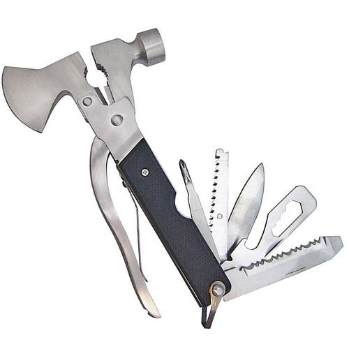
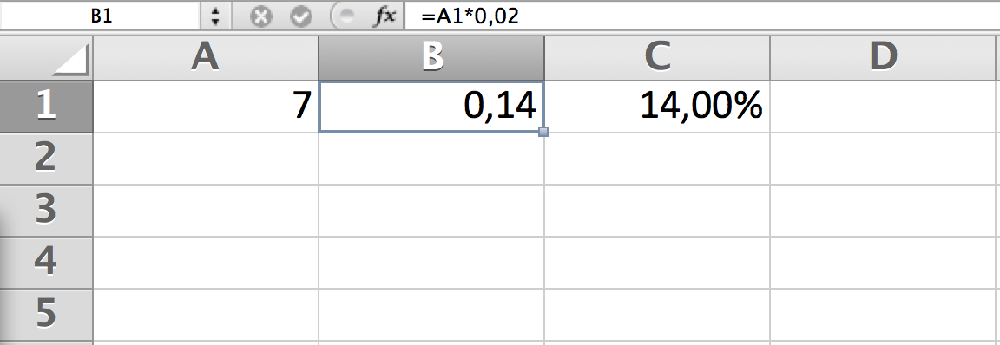
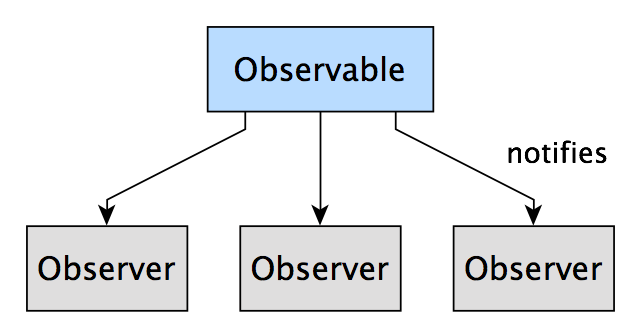
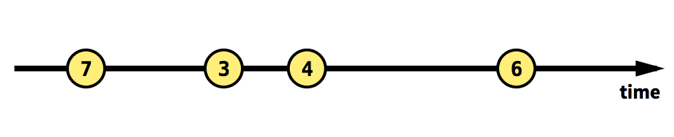
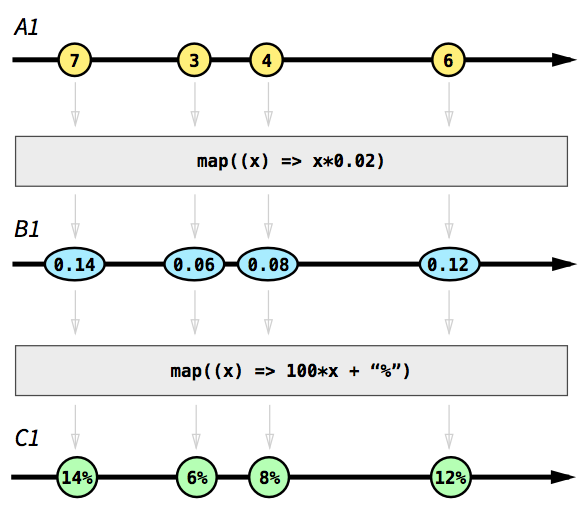
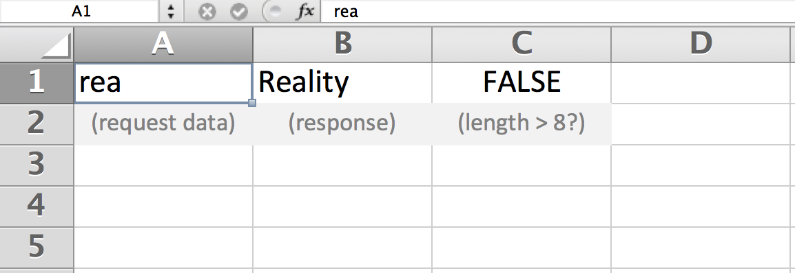

Software
Is eating the World
Asynchronous programming
Multiple events and computations happening simultaneously
Async is contagious
Async makes sense today
Async performs better
Callbacks
 ReactiveX.io
ReactiveX.io
Andre Medeiros
Reactive Programming
Observer pattern
Observable
Stream of events
Composable streams
Beyond Excel?
DUALITY
turns your mind upside down
| PULL | PUSH |
| Interactive | Reactive |
| Iterable | Observable |
|
Data consumer synchronously pulls from producer |
Data producer asynchronoulsy pushes to consumers |
Why ReactiveX?
- Separation of concerns
- Observables as inputs and outputs
- Async error handling
- Concurrency abstracted away
Rx for the frontend
Mouse events, keyboard inputs,
requests/responses, notifications,
MVC, analytics events,
progress bars, real-time interactions,
etc
Rx for the backend
Serve Observables in your API to enable implementation independence and concurrency abstraction.
Netflix and Couchbase have an Rx-based API.
Rx makes real-time big data analytics possible.